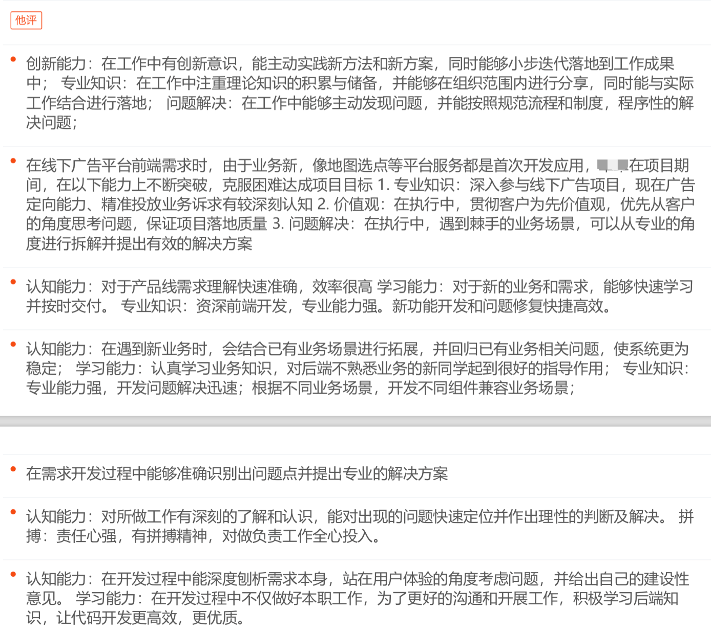

基本信息
- 性别：女
- 工作经历：10年
- 学历：本科
- 专业：计算机科学与技术
- 英语水平:CET6
- 邮箱：wslmts@163.com
基于github公开，部分信息不展示
有问题可以发邮件
继续请左滑工作经历
- 2017-至今：京东
- 2015-2017：大街网
- 2013-2015：北京博校文达科技股份有限公司
- 2011-2013：中国联通-中网威信电子安全服务有限公司
京东典型项目-1
- 项目名称
- 品牌广告运营系统
- 项目概述
- 运营使用的广告后台系统，新建订单，处理结算等功能。
- 个人职责
- 前后端分离，主要采用vue全家桶，配合后端，实现业务逻辑
- 项目难点
- 还好，因为有很多现成的组件
- 工作成果
-
- 没有一个项目因为前端延期;
- 目前为止只遇到过一个线上bug，而且快速响应，半小时内处理完。
- 开发多个组件，代码复用率高。
京东典型项目-2
- 项目名称
- 品牌广告前端CI流程搭建
- 项目概述
- 将品牌广告项目打包流程与单元测试整合起来，实现项目自动化
- 个人职责
- 在现有jenkins流程基础上，搭建流程
- 项目难点
- 对jenkins的配置并不熟悉，最初一个动态分支的命名就查了很多文档(下一个流程使用上一个流程的分支*/$gitlabSourceBranch)
- 工作成果
-
- 流程搭建成功，还顺利应用到其它项目；
- 在部署失败后，还会发送邮件通知相关管理人员。
京东具体项目
- 品牌广告运营系统
- 站外秒杀系统
- 权限系统用户管理
- 链路系统dashbord模块
- 品牌广告系统集成
- 水印工具
- 业务组件
大街网典型项目-1
- 项目名称
- 招聘后台项目迭代
- 项目概述
- 供招聘方使用的后台系统，主要是简历处理，面试邀请，信息沟通等功能
- 个人职责
-
1.项目迭代，独立完成需求模块的前端业务功能;
2.前后端分离，主要采用jquery库，实现业务逻辑，配合后端，实现招聘后台功能迭代
- 项目难点
- 兼容ie7，很多功能实现比较费劲
- 工作成果
- 工作都能保质保量完成，在同事心中是处理问题的能手，很多不是我负责的项目也会找我排查问题。
大街网典型项目-2
- 项目名称
- cocos-2d-js动画
- 项目概述
- 主要针对企业校园招聘宣讲会，动画交互展示公司宣传；
- 个人职责
- 独立开发多个公司的品牌动画
- 项目难点
- 没有接触过cocos-2d-js，需要快速学习cocos-2d-js的使用，边学边用
- 工作成果
- 属于跨组支援项目，支援期间按时完成多个品牌小动画，得到同事认可，获得小组项目奖金激励
大街网具体项目
- 微招聘渠道招商
- crm二期
- web端私信优化
- 邀约流程改造
- 我的职位订阅
- 三星H5页面动画（小部分）
- web主站密码设置修改；
- 主站新增 “帐号异常”拦截页面
- B端人才搜索结果页+B端首页改造
- B端左右导结构优化
- 添加猎聘第三方导入页面入口
- RPO邀约数据模块和候选人管理模块
- 职业档案（档案简历合并）项目
- C+后台的优化
- web IM
- C+后台，候选人管理，人才搜索功能
- cocos-2d-js动画
- 线上bug修改和小需求支持
博校文达典型项目-1
- 项目名称
- 网盘系统
- 项目概述
- 类似百度网盘，主要实现学校内部资源的存储，分享
- 个人职责
- 前后端没有分离，主要采用jquery实现各种交互，结合项目经理提供的service接口，自己编写controller和view部分的内容；
- 项目难点
- 没有产品经理，模仿百度网盘的功能，和后端同事一起摸索实现；
- 工作成果
- 多所学生使用内部自己的网盘
博校文达典型项目-2
- 项目名称
- 组件作业
- 项目概述
- 老师在线发布作业，学生在线完成
- 个人职责
- 参考在线学习，实现了整个业务流程包括service部分。
- 项目难点
- 边学习后端框架，边实现
- 工作成果
- 熟悉了整个后端开发流程，对后来理解项目有很大的帮助。
博校文达具体项目
- 网盘系统
- 在线测试
- 在线学习
- 组件作业
- 邮件系统
- 通知系统
- 城南学校社区系统
- 申请审批系统
- 星城学校养正系统和心理辅导系统；
- 在线调查
- 信息采集
- 通用日程
中网威信典型项目-1
- 项目名称
- 联通集团报账系统移动办公开发
- 项目概述
- 使用xml、xpath、javascript，结合第三方公司提供的工具，实现PC端报账系统中的公文实现在手机中展现、流转。
- 个人职责
- 第一个独立负责完成的项目。
- 项目难点
- OA系统流转复杂，系统使用文档覆盖功能点不全面，需要自己摸索使用。
- 工作成果
- 不懂的问题及时想老员工请教，独立开发完成。
中网威信典型项目-2
- 项目名称
- 使用mantis搭建测试缺陷管理平台
- 项目概述
- 公司没有正规的缺陷管理平台，项目开发都是使用word记录；于是我在做项目空隙寻找到一个开源的管理项目。
- 个人职责
- 项目难点
- 搭建时由于系统版本问题，mantis涉及php.mysql等环境，按照文档的部署并不能顺利实现，边查文档边部署边总结；
- 工作成果
-
搭建了公司内部第一个正式的bug管理平台;
组织培训平台的使用；
中网威信具体项目
- 塔里木移动办公开发
- 联通集团报账系统移动办公开发
- 农业部呼叫中心移动办公开发
- 使用mantis搭建测试缺陷管理平台
专业技能
- 熟练使用html、css、javascript、xml、jquery等；
- 熟练使用vue,vue-router,vuex,vue-test-util等；
- 熟练使用git常用命令；
- 熟练使用webpack；
- 了解react的使用；
- 了解typescript的使用；
- 了解node的使用；
- 掌握测试管理平台mantis的使用；
- 掌握java语言的使用,熟悉spring、hibernate的使用；熟练使用jsp构建交互性页面；
- 熟悉linux操作系统，掌握常用linux命令的使用；
- 熟悉photoshop的使用，熟练切图，改图；
- 其它相关技术如nginx、jekins,docker都有粗浅了解；
其它
- 生日:1989
- 婚姻状况:未婚，近2年内不会结婚
- 优势：高效，负责,喜欢了解新事物，项目经验丰富
- 劣势：内向，不善交际
360环评
